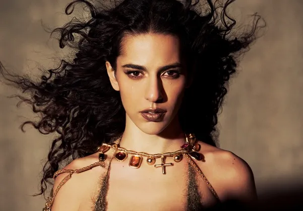

Aqui apresento três dos meus cantores favoritos! Ricos em cultura, em tibre, em personalidade e em MPB!!!!!!!!!
A cantora Marina Sena.

Marina Sena. Cantora e compositora mineira, destaque do pop e da MPB contemporânea com sua identidade vocal marcante e ritmos envolventes.
O cantos Ney Matogosso.
Ney Matogrosso. Ícone da música brasileira, reconhecido por sua performance camaleônica, alcance vocal único e liberdade artística desde os tempos do Secos & Molhados.
O cantor Cazuza.
Cazuza. Um dos maiores poetas e compositores do rock brasileiro, marcou gerações com suas letras intensas e contestadoras nos anos 1980.